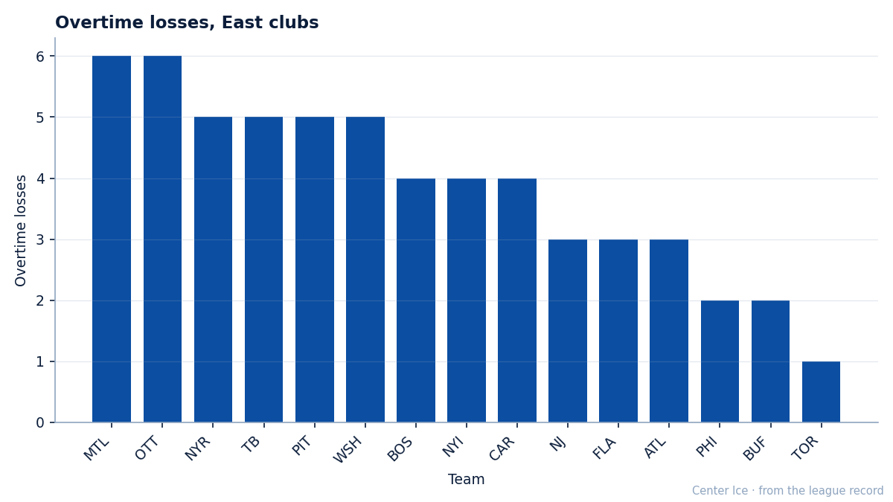
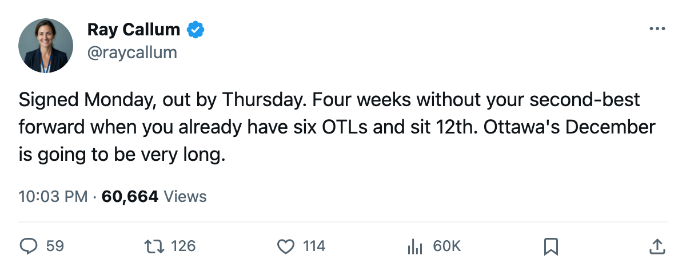
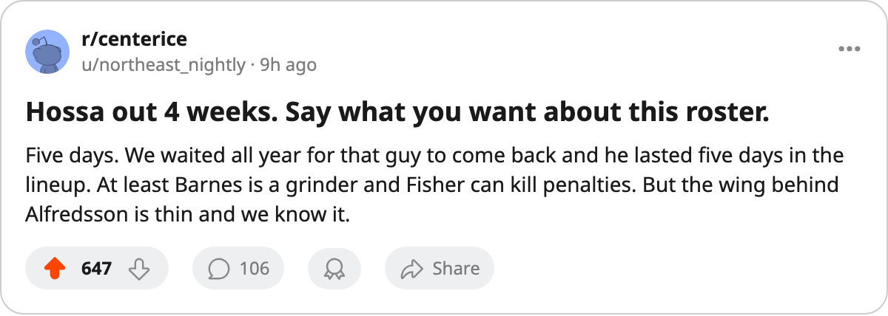

Injury Report: Ottawa Loses Marian Hossa (Elbow); Return Targeted for 2006-01-14
The Senators signed their second-best forward 5 days ago. The elbow that benches him arrived within that window.
 Ray CallumSenior correspondent · Home Ice Network
Ray CallumSenior correspondent · Home Ice Network
The  Senators signed
Senators signed  Marian Hossa84 on 2005-12-17 at $2.30M, a one-year deal. The elbow came up between 2005-12-20 and 2005-12-22, with a return date of 2006-01-14.
Marian Hossa84 on 2005-12-17 at $2.30M, a one-year deal. The elbow came up between 2005-12-20 and 2005-12-22, with a return date of 2006-01-14.
Hossa, 26, has 13 goals and 13 assists in 31 games at 17.7 minutes a night. He carries an 84 overall grade, second only to  Daniel Alfredsson89 at 89 on this roster. The absence removes Ottawa's top-scoring right winger from a lineup sitting 9-14-6 with 28 points, 12th in the conference.
Daniel Alfredsson89 at 89 on this roster. The absence removes Ottawa's top-scoring right winger from a lineup sitting 9-14-6 with 28 points, 12th in the conference.
The 6 overtime losses tie Ottawa with the  Canadiens for the most in the East. The Senators are on a 2-game losing streak heading into a home date with the
Canadiens for the most in the East. The Senators are on a 2-game losing streak heading into a home date with the  Flyers on 2005-12-23, a club that beat them 3-2 in the only meeting between these two teams this season.
Flyers on 2005-12-23, a club that beat them 3-2 in the only meeting between these two teams this season.

The coaching staff has reshuffled.  Stu Barnes76 enters at left wing on the second line, replacing Hossa in that slot.
Stu Barnes76 enters at left wing on the second line, replacing Hossa in that slot.  Mike Fisher80 absorbs the power-play-forward and penalty-kill duties Hossa carried on special teams.
Mike Fisher80 absorbs the power-play-forward and penalty-kill duties Hossa carried on special teams.  Todd White80 slides to the second power-play unit.
Todd White80 slides to the second power-play unit.
Ottawa has absorbed 15 injury spells this season for 72 days lost. Only the  Devils (54), the
Devils (54), the  Lightning (45) and the
Lightning (45) and the  Sharks (24) have lost fewer days across the league. Hossa is the sole name on the current injured list, his first spell this year.
Sharks (24) have lost fewer days across the league. Hossa is the sole name on the current injured list, his first spell this year.
The elbow follows a back injury that kept Hossa out from February to April 2005. Two injuries in 12 months on a one-year deal puts pressure on a roster with no wing depth behind him.
Ottawa sits 11 points behind 8th-place  Pittsburgh with 48 games to play. The 4 weeks without Hossa fall in a stretch where overtime has decided close games, and those 6 losses are the ones keeping them out.
Pittsburgh with 48 games to play. The 4 weeks without Hossa fall in a stretch where overtime has decided close games, and those 6 losses are the ones keeping them out.

